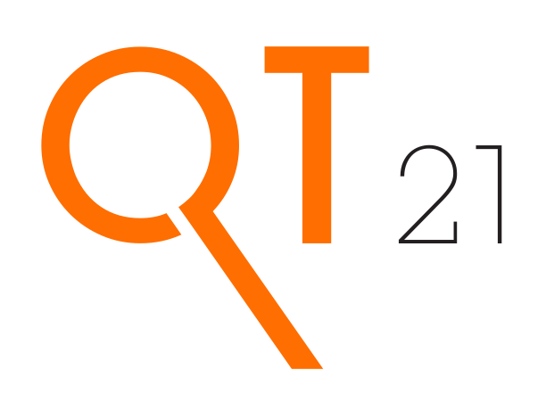

This shared task will build on its previous five editions to further examine automatic methods for estimating the quality of machine translation output at run-time, without relying on reference translations. We include word-level, phrase-level and sentence-level estimation. All tasks will make use of a large dataset produced from post-editions by professional translators. The data will be domain-specific (IT and Pharmaceutical domains) and substantially larger than in previous years. In addition to advancing the state of the art at all prediction levels, our goals include:
Participating systems are required to score (and rank) sentences according to post-editing effort. Multiple labels will be made available, including the percentage of edits need to be fixed (HTER), post-editing time, and keystrokes. The main prediction label will be HTER, but we welcome participants wanting to submit models trained to predict other labels. Predictions according to each alternative label will be evaluated independently. For the ranking variant, the predictions can be generated by models built using any of these labels (or their combination), as well using external information. The data consists of:
The data for download contains source sentences, their machine translations, their post-editions (translations), HTER as post-editing effort scores. Other scores, such as post-editing time, will be made available shortly. In both cases, The PET tool was used to collect these various types of information during post-editing. HTER labels were computed using TER (default settings: tokenised, case insensitive, exact matching only, with scores capped to 1).
As test data, for each language pair we will provide 2,000 new sentence translations, produced by the same SMT system used for the training data for each language pair.
The usual 17 features used in WMT12-16 is considered for the baseline system. This system uses SVM regression with an RBF kernel, as well as grid search algorithm for the optimisation of relevant parameters. QuEst++ is used to build prediction models.
As in previous years, two variants of the results can be submitted:
Evaluation is performed against the true label and/or ranking using as metrics:
Participating systems are required to detect errors for each token in MT output. We frame the problem as the binary task of distinguishing between 'OK' and 'BAD' tokens.
The data for this task is the same as provided in Task 1. As in previous years, all segments are automatically annotated for errors with binary word-level labels by using the alignments provided by the TER tool (settings: tokenised, case insensitive, exact matching only, disabling shifts by using the `-d 0` option) between machine translations and their post-edited versions. Shifts (word order errors) were not annotated as such (but rather as deletions + insertions) to avoid introducing noise in the annotation.
As training and development data, we provide the tokenised translation outputs with tokens annotated with 'OK' or 'BAD' labels. Download:As test data, for each language pair we will provide 2,000 new sentence translations, produced and annotated in the same way.
The baseline system is be similar to the baseline used at WMT-15 and WMT-16: the set of baseline features includes the same features as the ones used last year with the addition of feature combinations (target word + left/right context, target word + source word, etc.). The features are extracted with the Marmot QE tool. The system is trained with CRFSuite toolkit with passive-aggressive algorithm.
Submissions are evaluated in terms of classification performance via the multiplication of F1-scores for the 'OK' and 'BAD' classes against the original labels, as in WMT16. We will also report the F1-BAD score. We use this evaluation script for the metrics, and this script to compute significance levels using approximate randomisation.
NEW: Submissions to the word-level task will also be evaluated in terms of their performance at sentence level. The motivation for that is that we found that sometimes predictions at word level can work well as sentence-level predictors: the percentage of words labelled as 'BAD' in a sentence should essentially be similar to a sentence-level HTER score. All submissions for Task 2 will automatically be evaluated analogously to the sentence-level scoring task: using Pearson correlation (primary metric), MAE and RMSE scores. Participants aiming to optimise their models against sentence-level metrics can submit one additional system per language pair if they wish so, using the submission format of Task 2. The binary word-level predictions will be used to compute the sentence-level score: number of words with 'BAD' label over the length of sentence.
The data for this task is the same as provided in Tasks 1 and 2. The labelling of this data was adapted from word-level labelling by assigning the 'BAD' tag to any phrase that contains at least one 'BAD' word. We note, however, that the order of the words in the source sentence is different here than the original word order, as some pre-ordering was applied to the source sentences before decoding. Given that our phrases correspond to the decoder segmentation (based on this reordered version of the source), it is not possible to revert the pre-ordering while keeping the segmentation produced by the decoder. We also provide the original source sentences before the pre-ordering for those interested.
As training and development data, we provide the tokenised translation outputs with phrase segmentation for both source and machine-translated sentences. We also provide target-source phrase alignments and phrase-level labels. Download:
The baseline phrase-level system is analogous to last year's system: it uses a set of baseline features (based on black-box sentence-level features) extracted with the Marmot tool and is trained with the CRFSuite tool.
As test data, for each language pair we will provide 2,000 new sentence translations, produced and annotated in the same way.
Submissions will be evaluated in terms of the multiplication of phrase-level F1-OK and F1-BAD.
The training and development data follow the same structure as for Task 3, but it is smaller (124 and 3,769, respectively). Download:
The baseline phrase-level system and evaluation procedures are the same as for Task 3.
As test data, we will provide 306 new sentence translations, produced and annotated in the same way.
These are the resources we have used to extract the baseline features in Task 1, which can also be useful for Tasks 2 and 3. If you require other resources/info from the MT system, let us know:
English-German
German-English
The output of your system for a a given subtask should produce scores for the translations at the segment-level formatted in the following way:
<METHOD NAME> <SEGMENT NUMBER> <SEGMENT SCORE> <SEGMENT RANK>Where:
METHOD NAME is the name of your
quality estimation method.SEGMENT NUMBER is the line number
of the plain text translation file you are scoring/ranking.SEGMENT SCORE is the predicted (HTER/METEOR) score for the
particular segment - assign all 0's to it if you are only submitting
ranking results. SEGMENT RANK is the ranking of
the particular segment - assign all 0's to it if you are only submitting
absolute scores. The output of your system should produce scores for the translations at the word-level formatted in the following way:
<METHOD NAME> <SEGMENT NUMBER> <WORD INDEX> <WORD> <BINARY SCORE>Where:
METHOD NAME is the name of your quality estimation method.SEGMENT NUMBER is the line number of the plain text translation file you are scoring (starting at 0).WORD INDEX is the index of the word in the tokenised sentence, as given in the training/test sets (starting at 0).WORD actual word.BINARY SCORE is either 'OK' for no issue or 'BAD' for any issue.The output of your system should produce scores for the translations at the phrase-level formatted in the following way:
<METHOD NAME> <SEGMENT NUMBER> <PHRASE INDEX> <PHRASE> <BINARY SCORE>Where:
METHOD NAME is the name of your quality estimation method.SEGMENT NUMBER is the line number of the plain text translation file you are scoring (starting at 0).PHRASE INDEX is the index of the word in the segmented sentence, as given in the training/test sets (starting at 0).PHRASE actual phrase. Multiword phrases should be written in whole with words delimited by spacesBINARY SCORE is either 'OK' for no issue or 'BAD' for any issue.Example of the phrase-level format:
| PHRASE_BASELINE | 4 | 0 | Geben Sie im Eigenschafteninspektor ( | BAD | |
| PHRASE_BASELINE | 4 | 1 | " Fenster " > " Eigenschaften " | OK | |
| PHRASE_BASELINE | 4 | 2 | ) , und wählen Sie | BAD | |
| PHRASE_BASELINE | 4 | 3 | Statischer Text | OK | |
| PHRASE_BASELINE | 4 | 4 | oder | OK | |
| PHRASE_BASELINE | 4 | 5 | Dynamischer Text | OK | |
| PHRASE_BASELINE | 4 | 6 | . | OK |
The example shows the labelling for the sentence (double vertical lines show phrase borders):
Geben Sie im Eigenschafteninspektor ( || ' Fenster ' > ' Eigenschaften ' || ) , und wählen Sie || Statischer Text || oder || Dynamischer Text || .
performed by the PHRASE_BASELINE system.
INSTITUTION-NAME_TASK-NAME_METHOD-NAME, where:
INSTITUTION-NAME is an acronym/short name for your institution, e.g. SHEF
TASK-NAME is one of the following: 1, 2, 3.
METHOD-NAME is an identifier for your method in case you have multiple methods for the same task, e.g. 2_J48, 2_SVM
For instance, a submission from team SHEF for task 2 using method "SVM" could be named SHEF_2_SVM.
You are invited to submit a short paper (4 to 6 pages) to WMT describing your QE method(s). You are not required to submit a paper if you do not want to. In that case, we ask you to give an appropriate reference describing your method(s) that we can cite in the WMT overview paper.
| Release of training data | February 10, 2017 |
| Release of test data | April 10 2017 |
| QE metrics results submission deadline | May 6 2017 |
| Paper submission deadline | June 2 2017 |
| Notification of acceptance | June 30 2017 |
| Camera-ready deadline | Julu 14 2017 |
For questions or comments, email Lucia Specia lspecia@gmail.com.
Supported by the European Commission under the projects
